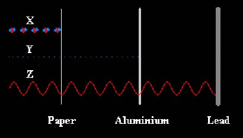
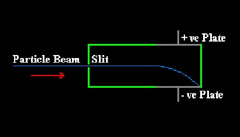
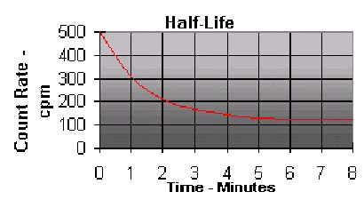

Atomic Structure and Isotopes
1) Most of the mass in an atom is contained in the nucleus. What particles are contained in the nucleus?
2) Electrons orbit around the Nucleus. Which of the following statements is true about electrons?
3) What is the relative mass and charge of a Proton?
4) What is the relative Mass and Charge of a Neutron?
5) What is the relative Mass and Charge of an Electron?
6) The element Radon has the symbol:
222
Rn
86
What is its Mass Number?7) The element Radon has the symbol:
222
Rn
86
What is its Atomic Number?
8) The element Radon has the symbol:
222
Rn
86
How many Neutrons does it have in its Nucleus?
9) Which of the statements below best describes an alpha particle?
10) Different elements have different numbers of Protons. Atoms of the same element and therefore Proton Number, but which have a different number of Neutrons are called what?
11) Where does radioactivity come from?
12) When firing alpha particles at thin gold foil, most go straight through, but the occasional one comes straight back. What does this suggest?
Types of Radiation
13) The diagram shows various types of radiation being stopped by different materials. What is the radiation labelled 'X'?

14) The diagram shows various types of radiation being stopped by different materials. What is the radiation labelled 'Y'?
15) The diagram shows various types of radiation being stopped by different materials. What is the radiation labelled 'Z'?
16) Alpha, Beta, and Gamma are types of radiation. What are their relative compositions?
17) Alpha, Beta, and Gamma are types of radiation. What are their relative charges?
18) Which of the following types of radiation causes the most intense ionisation when it is absorbed?
19) Alpha, Beta, and Gamma are types of radiation. What are their relative ionisation strengths?
20) Study the diagram carefully. A stream of particles is made to pass through a narrow slit and then through two parallel plates. The particles are seen to make a downward parabolic path. What type of particles are they?

21) When a Beta particle is emitted from a source, what happens in the nucleus?
22) Which of the following statements is NOT true about radiation?
Detection of Radiation
23) Some substances give out radiation all the time and they are said to be radioactive. When molecules are struck by this radiation, they may become electrically charged. What is the name for this process?
24) Which of the following detects radiation by detecting an electrical discharge caused by ionisation?
25) Which of the following could not be used to detect ionising radiation?
26) If you want to find the count rate of a source, you must always measure the background count first. This is then subtracted from each reading taken using the source. Why is this?
27) The unit used for measuring radioactivity is the Becquerel (Bq). One Becquerel is one nucleus decaying per second. What could a count rate of 60 counts per minute be represented by?
28) Workers in the nuclear industry and those using X-ray equipment such as dentists and radiographers wear little blue badges which have a piece of photographic film in them. The film is checked every now and then to see if it has got 'fogged' too quickly. What would be the most likely reason for the badge to become fogged too quickly?
Background Radiation
29) Which of the following is NOT a source of background radiation?
30.) Radiation from space is known as cosmic rays. Where do most of these come from?
31.) Background radiation comes from many sources. Which of the following sources produces most of our background radiation?
32.) Background radiation comes from many sources. Which of the following sources produces the least of our background radiation?
Radiation Hazards and Safety
33.) Which of the following types of radiation can enter living cells and cause ionisation, thus damaging or destroying the cell?
34.) Which of the following would most likely cause cancer?
35.) A very high dose of radiation will normally kill cells completely. If this happens, what is the most likely outcome?
36.) Which of the following does the extent of the radiation effects, NOT depend on?
37.) Inside the body an alpha source is most dangerous because it will ionise all cells in localised area. What source or sources are most dangerous from outside the body?
38.) There are several precautions which should be taken to safely use radioactive materials in the laboratory. Which of the following is NOT one of them?
39.) Industrial nuclear workers need to take extra precautions when working with radioactive material. Which of the following is NOT true?
Random Process
40.) Where does radiation come from?
41.) The decaying of an unstable nucleus is entirely random. What can be done to make a decay happen or speed up the decaying process of a source?
42.) When a nucleus decays it often changes into a new element, but what type of radiation will it emit?
43.) In the nuclear industry, what is fired at a nucleus to make it unstable?
Nuclear Fission and Nuclear Equations
44.) What takes place in a Nuclear Fission Reactor?
45.) When an atom is bombarded with neutrons, several things will happen. Which of the following is NOT a consequence of an atom being bombarded by neutrons?
46.) Atoms of atomic number 92 and mass number 234 decay to form new atoms of atomic number 90 and mass number 230. What will these emissions consist of?
47.) An atom with atomic number 90 and mass number 232 decays into a new element. To do this, it emits an alpha particle. What is the structure of the new nucleus after the emission?
Half Life
48.) What is the time taken for half the radioactive atoms in a sample to decay known as?
49.) Which of the following statements is NOT true about half-life?
50.) Study the graph carefully. What is the background count rate?

51.) The graph shows a radioactive sample decaying. After correcting the count rate for the background radiation, what is the half-life of the sample?
52.) A radioactive sample has a count rate of 800 counts per minute. One hour later, the count rate has fallen to 100 counts per minute. What is the half-life of the sample?
53.) Carbon-14 has a half-life of 5,700 years, and makes up about 1/10,000,000 of the carbon in the air. A bone is found to contain 1 part in 15,000,000 Carbon-14. How old is the bone?
54.) The half-life of Uranium-238 is 4.5 billion years. A sample of rock contains Uranium and Lead in the ratio 75:525. How old is the rock?
Uses of Radioactive Materials
55.) In order to find a leak in an underground water pipe, a radioactive tracer is added to the water. Which type of radiation would be most suitable for this?
56.) A radiation source is used to control the thickness of a continuous sheet of metal. When the detector detects too much radiation, the metal has become too thin and so the rollers automatically open out until the correct thickness is reached. The opposite will happen when the metal is too thick. What type of source would be most suitable for this?
57.) Which of the following statements is NOT true about nuclear fuel?
Uranium58.) Cancers can be treated using radiation. It has to be directed carefully to kill the cancer cells without damaging too many normal cells. What type of radiation would be ideal for this?
59.) In order to find out if a person's thyroid gland is working correctly, an iodine-131 tracer is used. What properties does this type of tracer have?
60.) All isotopes that are taken into the body must be of a type that easily pass back out. What type of radiation would be suitable for this?
Extra Questions
61.) Which of the following types of radiation can penetrate a piece of cardboard or a person's skin?
62.) Depending on where you are, the level of background radiation can change. Which of the following statements is NOT true?
63.) An atom with atomic number 82 and mass number 212 decays into a new element. To do this, it emits a beta particle. What is the structure of the new nucleus after the emission?
64.) A radioactive isotope has a half-life of 1 day. What fraction of it remains after 3 days?
65.) Sterilisation of food and surgical instruments is very important in the world today. Which of the following statements is NOT true?
66.) Atoms of atomic number 88 and mass number 228 decay to form new atoms of atomic number 89 and mass number 228. What will these emissions consist of?
67.) Which type of radiation would be stopped by a few millimetres of aluminium, but not by paper?
68.) A radioactive sample is tested using a Geiger tube with a thin end window. When a piece of paper is placed between the source and the tube, there is no fall in the count rate. When the piece of paper is replaced by a thick sheet of aluminium, the count rate falls significantly, but remains well above the background level. What type of radiation does this sample emit?
69.) What is the time taken for the activity of a radioactive substance to fall to half its original value known as?
70.) Which of the following statements is NOT true about radioactive dating?
71.) Potassium-40 decays into the stable product Argon-40. As long as the Argon gas has not been able to escape, then relative proportion calculations can be used to date igneous rocks. If Potassium-40 has a half-life of 1.3 billion years and a rock is found to be 2.6 billion years old, how much Argon-40 will it contain?
72.) An atom with proton number 88 and nucleon number 228 decays into a new element. To do this, it emits a beta particle. What is the structure of the new nucleus after the emission?
73.) Which of the following statements is NOT true about neutrons?
74.) A radioactive source is sealed inside a box. The box is made of lead 2cm thick. Radiation from the source can be detected outside the box. What must the source be emitting?
75.) An isotope has a half-life of 12 minutes. How long will it take to drop from 840 Bequerels to 210 Bequerels?
76.) A radiation source is used to control the thickness of a continuous sheet of paper. When the detector detects too much radiation, the paper has become too thin and so the rollers automatically open out until the correct thickness is reached. The opposite will happen when the paper is too thick. What type of source would be most suitable for this?
77.) 1/8 of a sample of radioactive material remains after a period of 12 days. What is the half-life of the sample?
78.) An atom with proton number 84 and nucleon number 216 decays into a new element. To do this, it emits an alpha particle. What is the structure of the new nucleus after the emission?
79.) Atoms of atomic number 92 and mass number 238 decay to form new atoms of atomic number 90 and mass number 234. What will these emissions consist of?
80.) Carbon-14 has a half-life of 5,700 years, and makes up about 1/10,000,000 of the carbon in the air. Carbon dating is used to find that a burial shroud is 8,400 years old. How much carbon-14 does the shroud now contain?
Right:
0
Wrong:
0
Attempts:
0